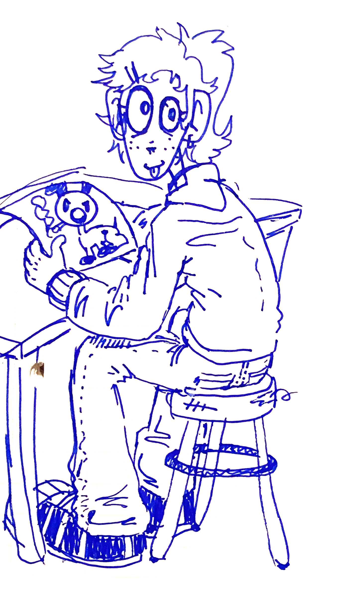

About me
I currently have been attending Parsons School of Design for Design Technology. Growing up I never thought I would be earning a higher education and am so happy that I have been able to do so. I want to make my Mum and siblings proud and help myself build my future based on what they have built for me. I chose Design Technology because I felt it really fell inline into my hobbies and interests. I have always loved drawing comics and funny characters and learning to create video games is such a perfect way I can implement these passions into a new way, even create a career from it! My career goals are still not the most clear to me to be fully honest, but that's why I am trying my best in and outside of school to explore opportunities. I first got into coding in 2020 trying to teach myself html, yes, HTML isn't technically code, but piercing it together was super fun for me to do. I kept trying to create games with html, and it was not the best language to do so.
- When Did I start making art?
- What are your insperations?
- How did you become coneccted with the scene and 1c?
- What are your goals for the future?
- When Did you start making art?
- I've been drawing my entire life! I'd say I actully started taking it more suriously in as of recent though.
- What are your inperations?
- First things that come to mind is cartoons and my friends. Growing up I was always obsesed with cartoons, and loved how playful and imaginative they are and I love to do the same with my art. My friends really inspire me to stay focused and continue working hard. If it wasn't for my friends, I would of never been where I am today with my love for creating!
- How did you become coneccted with the scene and 1c?
- People get very confused with how I am in 1c or around the underground NYC music scene as I do not make music. I'd say from meeting Shouiyo who is a music artist, she introduced me to her other friends that also made music and it went on an on! Somehow I got surounded in a friend group where everyone makes music and thats how I got lead into all this.
- What are your goals for the future?
- I don't have a clear cut five year plan or anything, but I know creativity will always be apart of my future. I am curently going to school for game development, so that is defenetley a path I am excited to explore!